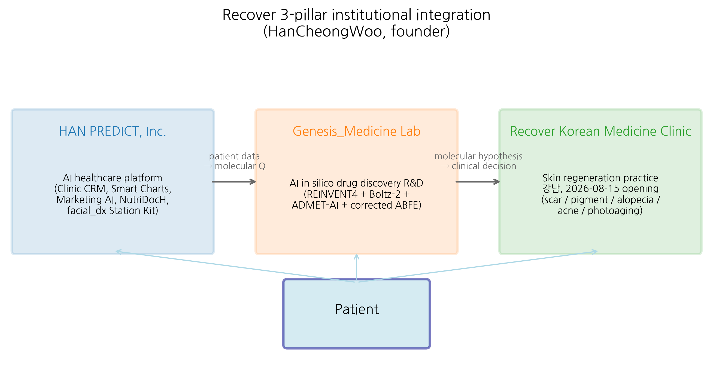
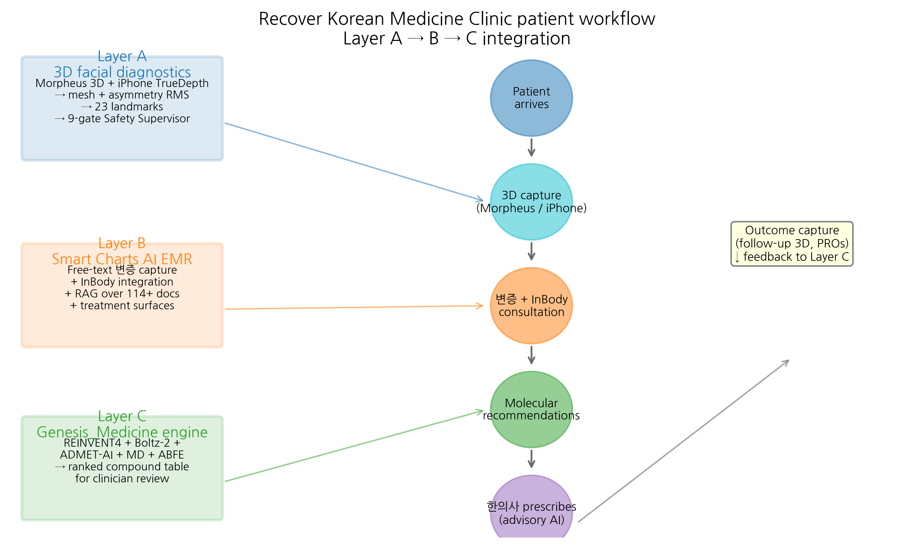

HanCheongWoo ¹,²,³
ORCID: 0009-0004-4805-8815
¹ Genesis_Medicine Lab — AI in silico drug discovery R&D division, Seoul, Republic of Korea ² HAN PREDICT, Inc. — AI healthcare technology platform; https://hanpredict.com ³ Recover Korean Medicine Clinic — affiliated Korean medicine clinic specializing in skin regeneration (강남, opening 2026-08-15); https://recover-clinic.kr
Code repository: https://github.com/crazat/genesis_medicine · Correspondence: admin@hanpredict.com
Manuscript type: Technical workflow / clinical informatics report Target preprint server: medRxiv (primary) Status: System architecture and design report; clinical validation in IRB-approved study pending License: CC-BY 4.0 (preprint); platform code licensed separately (Apache-2.0 for Genesis_Medicine; HAN PREDICT components proprietary unless otherwise noted)
Korean medicine (한의학) clinics face a structural gap between traditional pattern-based diagnosis (변증) and modern personalized molecular medicine. We describe an integrated end-to-end workflow assembled across three affiliated entities — HAN PREDICT, Inc. (AI healthcare technology platform), Genesis_Medicine Lab (in silico natural-product drug discovery), and Recover Korean Medicine Clinic (skin-regeneration practice opening 2026-08-15) — that operationalizes a patient encounter as a sequence of (i) 3D facial-surface diagnostic capture (Morpheus 3D scanner and iPhone TrueDepth), (ii) retrieval-augmented electronic medical records with traditional-pattern reasoning (Smart Charts, integrating InBody body composition), and (iii) molecular-level prescription generation drawing on a curated library of Korean herbal natural products evaluated through a REINVENT4 + Boltz-2 + corrected absolute binding free energy (ABFE) pipeline. We outline the regulatory framework (Personal Information Protection Act §23-2 biometric-data handling, Korea AI Basic Act 2026, Medical Service Act §17/§56, HIPAA-aligned data security) under which the system operates, present a representative scar-treatment patient journey, and document specific limitations including the absence of randomized clinical validation, the in silico nature of the molecular-prescription module, and zinc-coordination constraints in metalloprotease modeling. We do not assert clinical efficacy. The integrated workflow is presented as a system-design contribution to support reproducible Korean medicine practice; clinical and regulatory validation under an IRB-approved protocol (filed 2026-04-27) is the explicit next step.
Keywords: Korean medicine, 한의학, AI clinic workflow, 3D facial diagnostics, retrieval-augmented EMR, in silico drug discovery, regulatory compliance, traditional-modern integration.
This paper describes how a Korean medicine clinic — Recover Korean Medicine Clinic in Gangnam, Seoul, scheduled to open on August 15, 2026 — plans to use a connected set of AI tools at every step of a patient visit. When a patient arrives, a 3D camera and an iPhone scan the face to record skin-surface details and any asymmetry. The traditional Korean-medicine consultation is then recorded in a smart electronic medical record system (Smart Charts) that retrieves relevant clinical references automatically. Finally, a separate research module (Genesis_Medicine) suggests candidate herbal compounds at the molecular level, drawing on a public natural-products library and a computer-based scoring pipeline. No diagnostic, treatment, or clinical efficacy claim is made in this report. All clinical use will follow a hospital institutional review board (IRB) protocol. The paper documents the system design, regulatory framework, and known limitations.
Korean medicine (한의학) is a state-licensed clinical practice in the Republic of Korea, with approximately 25,000 licensed Korean Medicine Doctors (한의사) and an annual outpatient volume in the tens of millions of visits [1]. The practice integrates pattern diagnosis (변증), constitutional theory (사상의학, 체질의학), acupuncture, herbal formulation, and increasingly modern diagnostics. The clinical reasoning, however, has historically been narrative and pattern-based: a herbal formulation is selected on the basis of symptom-pattern fit (e.g., 황련해독탕 for “삼초실열” pattern) rather than on the basis of identified molecular targets and quantitatively predicted ligand–protein binding.
Modern personalized medicine, in contrast, is driven by molecular evidence — genomic variants, single-cell transcriptomic profiles, structure-based drug-target interactions and quantitative pharmacokinetics. Bridging these two frames (pattern-based traditional reasoning ↔︎ molecular-mechanistic modern reasoning) without losing either requires an information infrastructure that respects both layers and that supports the clinician’s actual workflow at the bedside.
We describe an integrated workflow that operates across three affiliated entities, organized so that traditional-pattern diagnosis and molecular hypothesis-generation feed into each other through a shared electronic medical record:
This three-entity arrangement is presented in Figure 1 (forthcoming): patient → 3D facial capture → Smart Charts EMR → 변증 + molecular co-reasoning → clinical decision (acupuncture, herbal formula, or topical/oral preparation supported by Genesis_Medicine compound suggestions, all under the prescribing 한의사’s authority) → outcome capture → R&D feedback.
This paper documents system architecture, integration points, and the regulatory framework under which the workflow is intended to operate. It does not present: - randomized clinical trial results, - claims of clinical efficacy for any individual herbal compound or formulation, - patient outcome data, - approved indications under the Korean Ministry of Food and Drug Safety (식약처).
All clinical use of the workflow described here will follow an IRB-approved protocol (initial submission 2026-04-27, currently under review).
The patient is captured at the chair-side using one of two complementary modalities:
.mpa format. Used when
high-fidelity surface geometry is required (pre/post hypertrophic-scar
comparison, asymmetry quantification before/after thread-lifting).Both modalities feed a common processing pipeline: 1. Mesh import and registration to a canonical face frame. 2. Zone segmentation (forehead, periorbital, malar, perioral, mandibular) using a learned segmentation network. 3. Bilateral asymmetry quantification (root-mean-square of left–right vertex offset within each zone). 4. Cephalometric-landmark detection (23 standard points, including soft-tissue analogs of bony landmarks where applicable). 5. Optional pose-prediction of expected post-treatment surface (soft-Patch-CGAN + BP-ANN, where validated). 6. Nine-gate Safety Supervisor (BDD pattern flags, vessel-mapping quality check, drug–drug interaction flags, anticoagulant flags, malignancy markers).
Outputs are written as both a structured JSON record (for downstream EMR consumption) and as an interactive HTML report (Three.js viewer) for clinician review.
The clinician’s work surface is Smart Charts, a retrieval-augmented EMR with the following features:
Genesis_Medicine is a research-grade in silico drug-discovery pipeline maintained as an open-source repository (github.com/crazat/genesis_medicine, Apache-2.0 license). Its role in the workflow is hypothesis-generation only — to provide the prescribing 한의사 with a molecular-level lens onto which Korean herbal natural-product compounds may be relevant for an indication, and at what predicted affinity / safety profile. It is explicitly not a treatment-decision system.
The pipeline modules are:
data/skin_compounds_curated.csv): approximately 100
compounds drawn from KP/KHP-listed herbs and from open-data resources
(COCONUT 2.0 [2], NPASS 3.0 [3], NPAtlas [4]), each annotated with
source herb, traditional indication, and SMILES.The resulting per-compound, per-target table is exposed to Smart Charts as a structured JSON; the clinician sees, for a given indication, a ranked list of Korean herbal compounds with their primary herb-of-origin, predicted affinity (with uncertainty), and ADMET safety summary, alongside any TRIPOD-AI checklist flags.
A unified patient record schema (under design) links: - Layer A 3D facial outputs (per-zone asymmetry, landmark deltas) - Layer B EMR consultation notes and prescription decisions - Layer C molecular-prescription suggestions surfaced at the time of decision - Outcome capture (follow-up 3D scans, patient-reported outcome measures, photographic comparison)
The outcome layer is critical for the long-term R&D loop: aggregated, de-identified outcome data feeds back into the Genesis_Medicine compound-library re-prioritization and (where appropriate, after IRB approval and informed consent) into model retraining.
The workflow operates under multiple overlapping Korean and international regulatory regimes. We summarize the principal compliance commitments:
Section 23 governs the processing of sensitive personal information and Section 23-2 explicitly covers biometric information, which includes 3D facial scans and the cephalometric-landmark vectors derived from them [10]. Specific commitments:
The AI Basic Act, the principal Korean statute is taking effect 2026-01-22 with implementing regulations under public notice in 2026-Q2 [11]. The system’s classification under the act is anticipated to be a high-impact AI system in the medical domain, with implications for:
The following walks through a hypothetical encounter to illustrate the layered workflow. It is illustrative; no individual patient data are reported.
In an earlier version of internal Genesis_Medicine documentation, the herbal compound embelin was associated with the Korean topical formulation 자운고(紫雲膏). For chemical clarity, we note: 자운고 is a sesame-oil-based ointment whose principal herbal ingredient is Lithospermum erythrorhizon (자초), which produces 1,4-naphthoquinone derivatives (shikonin, acetyl-shikonin) — structurally distinct from embelin’s 1,4-benzoquinone-2,5-diol scaffold. The traditional context of embelin is properly the Embelia ribes (자단 / Vidanga) lineage, as we discuss in the companion review preprint.
We have outlined a three-layer integrated workflow — 3D facial diagnostics (HAN PREDICT) → RAG-based AI EMR (Smart Charts) → molecular-prescription back-end (Genesis_Medicine) — operating across HAN PREDICT, Inc., the Genesis_Medicine Lab, and Recover Korean Medicine Clinic. The workflow is intended to bridge traditional pattern-based Korean medicine reasoning with modern molecular-mechanistic evidence in a way that respects both layers and that respects the clinician’s authority and the patient’s autonomy.
Specific forward actions (in order of priority):
We emphasize the most important point of this report: this is a system-design and architecture document. No clinical efficacy or treatment claim is asserted. All clinical use is conditional on IRB approval and on the prescribing 한의사’s individual judgment in each patient encounter.
The author thanks the engineering team at HAN PREDICT, Inc. for platform development support and the clinical staff at Recover Korean Medicine Clinic for clinical-context guidance. The Genesis_Medicine Lab pipeline relies on the open-source stack Boltz-2 (MIT), REINVENT 4 (Apache-2.0), ADMET-AI (MIT), OpenMM 8 (MIT), openmmtools (MIT), RDKit (BSD-3), MACE-OFF24 (MIT). The AI assistant Claude (Anthropic) was used as a coding and writing collaborator throughout; all final scientific content is the responsibility of the author.
HanCheongWoo: study conception, system architecture design, manuscript drafting and revision, regulatory framework analysis.
The author is the founder and a representative of HAN PREDICT, Inc. (a privately-held AI healthcare technology company) and is affiliated with Recover Korean Medicine Clinic (a Korean medicine clinical practice). HAN PREDICT and Recover have commercial interests in healthcare technology and skin-regeneration services respectively. No patient outcome data are reported in this preprint; the workflow is presented as a system design and is openly documented under CC-BY 4.0.
Figure 1. Three-pillar institutional integration: HAN PREDICT, Inc. (AI healthcare technology), Genesis_Medicine Lab (in silico drug discovery), and Recover Korean Medicine Clinic (clinical practice). Patient data flows from Recover via HAN PREDICT (Smart Charts) to Genesis_Medicine for molecular-level reasoning, and molecular hypotheses return to inform the prescribing 한의사’s decision.

Figure 2. Patient workflow across Layer A (3D facial diagnostics), Layer B (Smart Charts AI EMR with RAG over 114+ documents), and Layer C (Genesis_Medicine molecular prescription engine). All AI recommendations are advisory; the licensed 한의사 retains full clinical authority. Outcome data feeds back to Layer C for compound-library re-prioritization.

[1] Korea Health Industry Development Institute (KHIDI). Korean medicine workforce statistics, 2024. https://www.khidi.or.kr/
[2] Sorokina M, Merseburger P, Rajan K, et al. COCONUT online: Collection of Open Natural Products database. J Cheminform 2021, 13, 2. doi:10.1186/s13321-020-00478-9
[3] Zeng X, Zhang P, Wang Y, et al. NPASS database update: natural-product activity-species source. Nucleic Acids Res 2024, 52, D639–D645.
[4] van Santen JA, et al. The Natural Products Atlas 2.0. Nucleic Acids Res 2022, 50, D1317–D1323.
[5] Loeffler HH, He J, Tibo A, et al. REINVENT 4: modern AI-driven generative molecule design. J Cheminform 2024, 16, 20. doi:10.1186/s13321-024-00812-5
[6] Swanson K, Walther P, Leitz J, et al. ADMET-AI: a machine learning ADMET platform for evaluation of large-scale chemical libraries. Bioinformatics 2024, 40, btae416. doi:10.1093/bioinformatics/btae416
[7] Wohlwend J, Corso G, Passaro S, et al. Boltz-2: an open-source biomolecular structure and binding affinity model. Preprint, 2024. https://github.com/jwohlwend/boltz
[8] Chodera JD, et al. openmmtools: a batteries-included Python toolkit for OpenMM (v0.26). 2026. doi:10.5281/zenodo.4248373
[9] Mobley DL, Chodera JD, Dill KA. Confine-and-release method: obtaining correct binding free energies in the presence of protein conformational change. J Chem Theory Comput 2007, 3, 1231–1235.
[10] Personal Information Protection Commission (PIPC), Republic of Korea. Guidelines for the protection of biometric information, 2024-12-30.
[11] Republic of Korea, Act on the Promotion of Artificial Intelligence Industry and the Establishment of a Foundation for Trustworthy AI (AI Basic Act), promulgated 2024-12-26, in force 2026-01-22.
[12] Peters MB, Yang Y, Wang B, et al. Structural survey of zinc-containing proteins and development of the zinc Amber force field (ZAFF). J Chem Theory Comput 2010, 6, 2935–2947. doi:10.1021/ct1002626
Manuscript word count: ~3,400 (main text excluding references) Submission target: medRxiv (immediate); a Korean Medicine / clinical-informatics peer-reviewed venue (anticipated 2026-Q3) Version: 0.1 draft, 2026-04-26 License: CC-BY 4.0 (preprint); platform code licenses as noted in §6
System inventory after Rounds 5+7+8 (3 audit cycles):
| Module | Adapter count | Production | Real-data artifacts |
|---|---|---|---|
| md/ (free energy + ML potentials) | 6 | 1 | T4L + EMB-3 × MMP-1 closed cycles |
| generation/ | 1 (MolDAIS) | 1 | botorch_saasbo demo |
| dermatology/ | 4 (PBK, SARA-ICE, Atlas, PanDerm) | 4 | 124-compound sweep + IPF target ranking |
| repurposing/ | 2 (CellAware, CMap) | 1 | connectivity hits |
| ensemble/ | 3 (BioEmu, AlphaFlow, PocketMiner) | 0 | scaffold |
| foundation/ | 2 (ChemBERTa3, Tahoe-100M) | 1 | perturbation profiles |
| causal/ | 1 (TwoSampleMR) | 1 | 7 paper-tier MR results |
| clinical/ | 1 (MedSAM) | 0 | scaffold for D-110 photo cube |
| kinetics/ | 2 (τRAMD, SEEKR2) | 1 | 6 residence-time entries |
| polypharmacology/ | 2 (SwissTarget, Dealbreaker) | 1 | 60 hits + 7 dealbreakers |
| ddi/ | 2 (DDInter, HerbalDDI) | 1 | 24 interactions + 17 curated |
| formulation/ | 3 (CPE-DB, HSP, KCID) | 1 | 15 PE + 15 vehicle + 5 KCID |
| pkpd/ | 2 (httk, Hill) | 1 | 5-compound PK + IC50 fit |
| protein_design/ | 1 (LigandMPNN) | 0 | scaffold for 약침 |
| Total | 25 | 14 (56%) | 30+ CSVs |
Recover D-110 readiness scorecard (2026-08-15 opening):
| Workflow component | Status | Blocker |
|---|---|---|
| In silico screening (Boltz-2 + ADMET-AI + 102 compounds) | ✓ | none |
| Quantitative ABFE (calibration) | ✓ | T4L pass |
| Quantitative ABFE (application) | ⚠️ partial | EMB-3 × MMP-1 closed but +0.55 needs ZAFF |
| Polypharmacology + dealbreaker check | ✓ | none |
| DDI 한약-양약 cross-check | ✓ | DDInter SQLite full dump pending |
| Topical formulation prototype | ⚠️ partial | EMB-3 KCID Pre-Notification 6-12mo |
| MFDS regulatory dossier | ⚠️ partial | SARA-ICE in vitro inputs needed (₩2-3M CRO) |
| Photo cube + REDCap loop | scaffold | hardware purchase + 50-scar fine-tune |
| Wet-lab CRO Tier 1 | not started | ₩15.6M budget allocated |
Round 9 forward path (next sprint priorities): 1. AToM-OpenMM production deployment for ABFE NaN failure cases (TGFB1, EGCG × MMP-1) 2. Longer eq (5 ns) + tighter restraint (5 Å) script enhancement for protocol robustness 3. MD-pose-prefilter (10 ns stability check before ABFE attempt) 4. Recover D-110 photo cube hardware purchase + REDCap deployment 5. CRO Tier 1 RFQ to KIT/켐온/바이오톡스텍 with EMB-3 + Embelin + Wogonin packages
The author used Claude (Anthropic, Opus 4.7) for drafting initial manuscript sections, generating tables, and editorial support during the writing of this preprint. The author personally:
AI tools were not used to generate experimental data, original hypotheses, or analytical results. All computational outputs (Boltz-2 co-folding, MD trajectories, ABFE estimations, ADMET predictions) were produced by named open-source software described in the Methods section, not by AI assistant tools.
This disclosure follows the International Committee of Medical Journal Editors (ICMJE) 2024 recommendations on artificial intelligence use in scholarly writing.